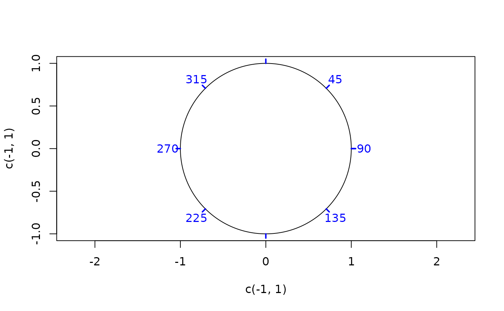

Adds stereoplot rickmarks to an existing plot
Usage
stereoplot_ticks(
length = 0.02,
angle = 10,
labels = FALSE,
ladj = 2 * length,
radius = 1,
rotation = 0,
...
)Arguments
- length
numeric. Length of ticks as fraction of
radius- angle
numeric. Division angle in degrees
- labels
this can either be a logical value specifying whether (numerical) annotations are to be made next to the tickmarks, or a character or expression vector of labels to be placed next to the tickpoints.
- ladj
adjustment for all labels away from origin of stereoplot circle. This essentially an amount that is added to
radiusand the length of the ticks.- radius
numeric. Radius of circle
- rotation
numeric. Rotation (positive for counter-clockwise) of tickmarks and labels
- ...
optional arguments passed to
graphics::segments()andgraphics::text()
See also
Other stereo-plot:
fault-plot,
lines.spherical(),
plot-spherical,
points.spherical(),
stereo_arrows(),
stereo_cones,
stereo_confidence(),
stereo_contour,
stereo_point(),
stereo_segment(),
stereoplot(),
stereoplot_guides(),
text.spherical()
Examples
plot(c(-1, 1), c(-1, 1), type = "n", asp = 1)
stereoplot_frame()
stereoplot_ticks(length = 0.05, angle = 45, col = "blue", lwd = 2, labels = TRUE)
